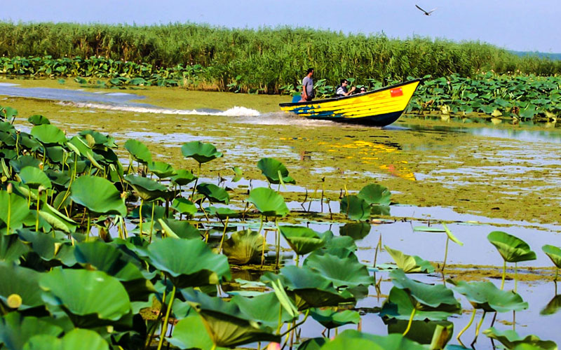

Northern Iran consists of the southern border of the Caspian Sea and the Alborz mountains.
Talesh
Make sure you explore Sobatan which is known as Iran’s Paradise for unparalleled natural beauty. Gisom Forest Park offers outdoor adventures like spectacular hiking and jet-skiing. Take in one-of-a-kind Saragah Lake’s scenery, and soak in the Varzan Waterfall’s view.
Masouleh
Masouleh is famous for its stunning step village. You can walk on the roofs and shop handmade stuff and enjoy the locals’ company and hospitality. Lose yourself in the wild beauty of tree-covered mountains and rushing Laar Spring. You can also hike to Kousham Waterfall and enjoy watching the water falling down from a 30 meters height.

Bandar-e Anzali
Bandar-e Anzali is home to famous Anzali Lagoon and water lilies. Cruise on the lake to enjoy the unique beauty of the lilies and wildlife. The lagoon is the natural habitat of many migratory birds during the winter. You can also visit the Palace Museum and a lot of bridges throughout the town.
Gorgan
Gorgan is home to huge awe-inspiring forests including the world-famous Nahar-Khoran, Alang-darreh, Tuskestan and Shast-Kala. Enjoy the concentration of lakes and waterfalls around the city. You can as well, hike and climb through its remarkable rural nature and explore the historic sites such as ancient Tureng Tepe in the city.
center of iran
Lut Desert, one of the hottest and driest pieces of our beautiful planet. Stretching over a vast land in the southeast of Iran, this fascinating desert is known as the most pristine place in the country!
Shiraz
Shiraz is a city in south-central Iran, known for its literary history and many gardens. The marble Tomb of Hafez, honoring the revered poet, sits within its own garden. To the east, the Mausoleum of Saadi houses the 13th-century writer’s mosaic-tiled tomb and an underground pool.
Tabriz
Tabriz is the capital city of East Azerbaijan Province, in northwestern Iran. Tabriz Bazaar, once a major Silk Road market, is a sprawling brick-vaulted complex selling carpets, spices and jewelry. The rebuilt 15th-century Blue Mosque retains original turquoise mosaics on its entrance arch. Collections at the Azerbaijan Museum range from prehistoric finds to 20th-century sculptures by Iranian artist Ahad Hosseini.
Tehran
Tehran Province (Persian: استان تهران Ostān-e Tehrān) is one of the 31 provinces of Iran. It covers an area of 18,814 square kilometres (7,264 sq mi) and is located to the north of the central plateau of Iran.
south of iran
Southern Iran consists of the southern mountain ranges of Zagros and Central Iranian Range, Khuzestan Plain and the northern coasts of Persian Gulf and Straight of Hormuz. It includes the provinces of Fars, Kohgiluyeh and Buyer Ahmad, Hormozgan and Bushehr.
Bushehr
Bushehr, also known as Bandar-e-Bushehr is a city in the Central District of Bushehr County, Bushehr province, Iran. It is a port city and the capital of the province. At the 2006 census, its population was 161,674 in 25,158 households. The following census in 2011 counted 195,222 people in 52,204 households.
Kish Island
Kish is a 91.5-square-kilometre resort island in Bandar Lengeh County, Hormozgan Province, off the southern coast of Iran in the Persian Gulf. Owing to its free trade zone status, the island is touted as a consumer's paradise, with numerous malls, shopping centers, tourist attractions, and resort hotels.
Khuzestan Province
Khuzestan Province is one of the 31 provinces of Iran. It is in the southwest of the country, bordering Iraq and the Persian Gulf. Its capital is Ahvaz and it covers an area of 63,238 square kilometres. Since 2014, it has been part of Iran's Region 4
Chabahar
Chābahār is a city in the Central District of Chabahar County, Sistan and Baluchestan province, Iran, and serves as capital of the county. It is a free port situated on the coast of the Gulf of Oman, and is Iran's southernmost city.